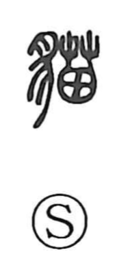

猫

Uncategorized
Kun: neko | On: byo
cat
Explanation
A phono-semantic character: the animal sign 犭 supplies the meaning of a beast, while 苗 serves as the phonetic, giving the on-reading byo. It denotes the cat. In older lore the cat was treated as a kind of tanuki, hence the synonym 狸奴. Because a cat’s pupils widen and contract strikingly with changes in light, neko no me, “cat’s eyes,” came to symbolize things that shift capriciously. The compound 猫鬼 (byoki) refers to a spell worked with a cat on the Day of the Rat in the zodiacal calendar—an echo of the uncanny aura traditionally felt around cats.